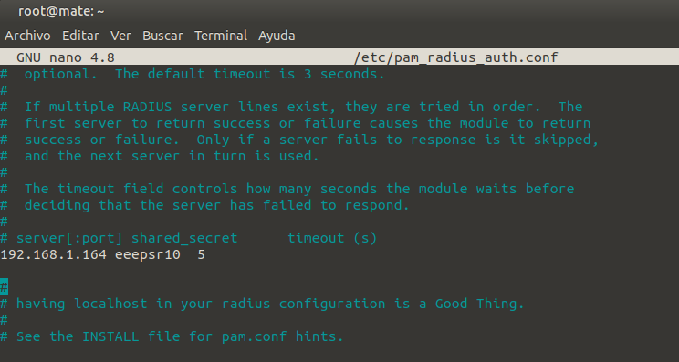
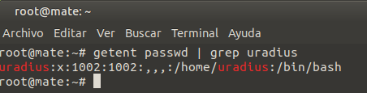

3.1.1.1. Instalación Cliente Radius para pruebas
1. Introducción
En este capítulo, se van a instalar y configurar dos clientes (Linux/Windows) para probar el servidor Radius.
2. Recursos necesarios
- Linux Ubuntu Desktop 20.04 LTS con el que se realizará la autenticación en el servidor Radius. Hay que Instalar la utilidad openssh-client para probar la autenticación Radius por ssh.
- Windows 10 Enterprise. Instalar la utilidad Putty o Bitvise para probar la autenticación Radius por ssh.
3. Instalación y configuración del cliente en Ubuntu Desktop
3.1 Instalación
En primer lugar hay que realizar la actualización de los repositorios locales para que posteriormente, se instalen las utilidades libpam-radius-auth y freeradius-utils.
root@mate:~#apt update
root@mate:~#apt install libpam-radius-auth freeradius-utils
Figura 1. Instalación de las utilidades libpam-radius-auth y freeradius-utils.
3.2 Configuración
Una vez finalizada la instalación, hay que modificar el fichero pam_radius_auth.conf ubicado en /etc/. El fichero contiene lo siguiente:
Figura 2. Modificación del fichero pam_radius_auth.conf.
Hay que modificarlo según la figura siguiente, donde hay que añadir la IP del servidor radius (ubuntu server) y la clave del cliente RADIUS antes creada.

Figura 3. Fichero pam_radius_auth.conf modificado.
- 192.168.1.164: Es la ip del servidor Radius (ubuntu server).
- eeepsr10: Contraseña Radius.
A continuación, hay que crear una cuenta local para el usuario RADIUS que anteriormente se ha mencionado, pero sin contraseña, para ello se utiliza el comando adduser:
root@mate:~#adduser uradius --disabled-password --quiet --gecos "".
Figura 4. Se añade el usuario local al equipo radius.
A continuación, aunque no es necesario, se modifica el fichero /etc/hosts con la dirección ip/nombre_equipo para que en el test radius, se envía la ip.
Figura 5. Modificación del fichero hosts.
3.3 Autenticación en el servidor Radius
Después de realizar el proceso anterior de instalación y configuración de FreeRADIUS , hay que realizar un test de autenticación en el cliente Ubuntu con un usuario de FreeRADIUS. Para ello, se va a comprobar el uso de la autenticación Radius mediante el comando radtest:
root@mate:~#radtest uradius eeepuc20 192.168.1.164 0 eeepsr10
donde,
- uradius y eeepsr10 es el usuario y contraseña del usuario del cliente Ubuntu.
- 192.168.1.164 es la IP del servidor radius (ubuntu server).
- eeepuc20 es la clave de cliente RADIUS.

Figura 6. Consulta del usuario uradius.
Si todo está configurado correctamente, debería aparecer el siguiente mensaje (Figura 7). Esto significa que la autenticación por RADIUS funciona.
Figura 7. Test de la autenticación Radius.
4. Autenticación por ssh en el cliente Radius
Para poder realizar las pruebas de autenticación Radius en el equipo Ubuntu Server donde se ha instalado freeRadius mediante equipos Windows y Linux, hay hay que realizar una serie de instalaciones/configuraciones que se describen a continuación.
4.1. Instalación de openssh-server en Cliente Radius Ubuntu
Para realizar la instalación de la utilidad openssh-server, hay que ejecutar el siguiente comando:
root@mate:~#apt install openssh-server
Figura 8. Instalación de openssh-server en el equipo cliente radius.
Una vez instalada la utilidad openssh-server, hay que editar el archivo sshd situado en /etc/pam.d/: Simplemente hay que incluir la siguiente línea al principio del fichero: auth sufficient pam_radius_auth.so
El resultado ha de ser el siguiente:
Figura 9. Fichero sshd modificado.
4.2. Prueba de autenticación desde un equipo Linux
Desde un equipo con Linux Mint 19 en la subred del servidor Radius (ubuntu server 20) y cliente Radius (Ubuntu 20), se va a realizar una petición de conexión ssh al equipo cliente radius para autenticarnos mediante el cliente radius. De esta manera, se accede al cliente radius Ubuntu autenticados contra el servidor Radius.
jc@jc-Latitude-E6430:~$ssh uradius@192.168.1.120
Figura 10. Autenticación en cliente radius.
donde,
- uradius: Es el usuario radius del equipo cliente.
- 192.168.1.120: Ip del equipo cliente radius.
- password: La contraseña que está en el fichero users ubicado en /etc/freeradius/3.0 del servidor de radius (ver figura inferior).
4.2. Prueba de autenticación desde un equipo Windows
Para la autenticación desde un equipo Windows 10 al equipo cliente Ubuntu 20 (radius) por ssh, hay que instalar una utilidad sshclient como putty o Bitvise.
Para este caso práctico, se ha escogido Bitvise para probar la autenticación por ssh en el equipo Cliente Ubuntu Mate con el usuario de RADIUS. Para ello se abre la utilidad Bitvise y en la zona de host hay que escribir la IP del cliente Ubuntu, en Port el puerto 22, en Username el usuario uradius del Radius y en password la contraseña Radius (para añadir la contraseña es necesario tener la casilla de selección de "Store encrypted passsword in profile").
Figura 11. Configuración de la petición ssh al cliente radius.
Figura 12. Pantalla de Host Key verification.
A continuación, hay que pulsar en 'New terminal console' para poder acceder al equipo cliente radius.
Figura 13. Consola del cliente Ubuntu ya autenticado con el usuario uradius.
Figura 14. Configuración de la petición ssh al cliente radius y terminal son el usuario uradius autenticado.
Figura 15. Equipo Ubuntu cliente radius y terminal con el usuario uradius autenticado.
4.3. Prueba desconexión servidor Radius
Si el servidor radius se para y se intenta la autenticación en el cliente Radius, no se tendrá éxito dado que la autenticación no se podrá negociar con el servidor ya que no está disponible.
| Parada del servidor radius | Intento de autenticación al cliente radius. |
Obra publicada con Licencia Creative Commons Reconocimiento No comercial Compartir igual 4.0